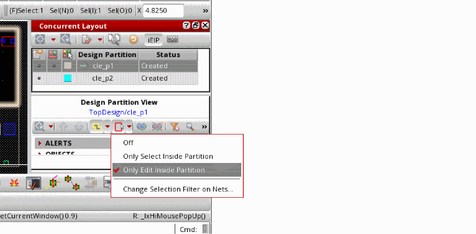

Performing Automatic Routing for an Area-based Design Partition
The following example considers two area-based design partitions, cle_p1 and cle_p2, added to a design.
-
Open the area-based design partition
cle_p1from Library Manager in Layout XL. -
Set edit mode to Only Edit Inside Partition.
 -
Right-click the design partition in the Concurrent Layout assistant and select Add Design Partition Net Set.
A net group containing all the nets in the design partition is created in the Navigator.
-
Select all nets in the Navigator, right-click, and then choose Route With Default Lookup for Virtuoso space-based routing.
The space-based router routes only the pins that are inside the design partitioncle_p1.
-
Select Launch – Layout EXL from the menu bar.
In Layout EXL with edit mode set to Only Edit Inside Partition, the router attempts to route between pins: -
Select all nets in the Navigator, right-click, and then choose Route With Default Lookup for Virtuoso space-based routing.
The space-based router routes completely within the design partition. Virtual pins are added at the partition boundary to partially route nets outside the design partition.
- Save and exit Layout EXL.
-
Open design
cle_p2in Layout EXL from Library Manager.
The Import Peer Design Partition form is displayed. - Click Import.
- Ensure that edit mode is set to Edit Inside Design Partition.
-
Right-click the design partition
cle_p2in the Concurrent Layout assistant and select Add Design Partition Net Set. -
Select all nets in the Navigator, right-click, and then choose Route With Default Lookup for Virtuoso space-based routing.
The space-based router partially routes the nets that are crossing the design partition.
Related Topics
Design Partition Options in Designer Mode
Return to top